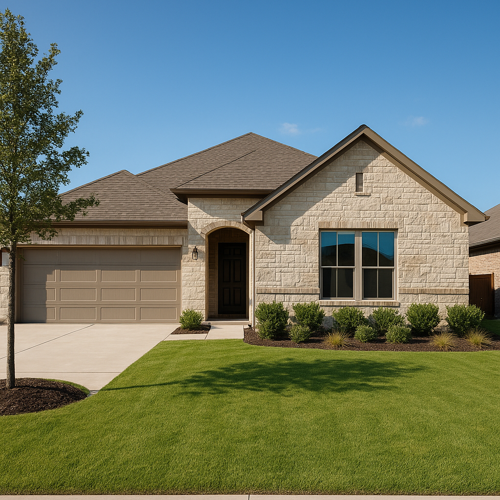

Flower Mound is one of the higher-end move-up markets I work in, straddling Denton and Tarrant counties with a buyer profile that tends to have strong credit and real savings. I'm Bond Peter Njoku (NMLS #2670329), a mortgage loan officer serving Flower Mound and the rest of DFW, and conventional loans are almost always the right call here over FHA given the price point and buyer profile.
This guide covers conventional loan requirements, down payment strategy, PMI, and 2026 loan limits for Flower Mound. Call or text me at 469-545-7180 to skip straight to the numbers — I'll run your scenario the same day.
Conventional Loan Requirements in Flower Mound TX for 2026
Conventional loans follow Fannie Mae and Freddie Mac guidelines statewide, but Flower Mound's price point changes how they play out in practice. Here's what you need to qualify in 2026:
- Credit score: 620 minimum; 700+ recommended for Flower Mound's competitive price range
- Down payment: 3% minimum (HomeReady/Home Possible); 10–20% most common in Flower Mound
- Debt-to-income ratio: Generally 43–45% max; up to 50% with compensating factors
- Employment: 2 years of verifiable employment or self-employment history
- Loan amount: Up to $806,500 (Denton/Tarrant County conforming limit, 2026)
- Property type: Single-family, larger-lot properties, and select townhomes
Flower Mound has a lot of larger-lot and custom-built homes, and conventional financing handles the appraisal and condition standards for these properties more flexibly than FHA in most cases.
Down Payment Options for Conventional Loans in Flower Mound TX
Here's how the math looks on a $520,000 Flower Mound home in 2026:
| Down Payment | Amount (on $520K) | PMI Required? | Approx. PMI/Month |
|---|---|---|---|
| 3% (HomeReady) | $15,600 | Yes | ~$200–$260 |
| 10% | $52,000 | Yes | ~$100–$140 |
| 15% | $78,000 | Yes | ~$60–$85 |
| 20% | $104,000 | No | $0 |
Most Flower Mound buyers I work with land between 10% and 20% down. PMI on a conventional loan cancels automatically once you reach 80% loan-to-value, which is a meaningful long-term savings compared to FHA's typically permanent mortgage insurance at this price point.
For buyers who want to lower their upfront cash, see my down payment assistance page for programs compatible with conventional financing.
2026 Conventional Loan Limits in Flower Mound TX
Flower Mound spans both Denton and Tarrant counties, and both share the same 2026 conforming loan limit: $806,500 for a single-family home. That covers the majority of Flower Mound purchases, though the highest-end estate properties can move into jumbo territory.
For more Flower Mound-specific details, see my Flower Mound conventional loans page, the main conventional loans guide, or my Flower Mound mortgage page.
Conventional vs. FHA for Flower Mound Move-Up Buyers
I model both loan types for every Flower Mound client, but the answer is usually clear given the buyer profile here. My general rule for 2026:
- Go conventional if: Credit score 700+, putting down 10% or more, buying an established or custom home
- Consider FHA if: Credit score under 640 or you need the lowest possible down payment — less common in Flower Mound but it happens
- VA loan if eligible: Always my first recommendation if you qualify — $0 down, no PMI
On a $520,000 Flower Mound home, the PMI-cancellation advantage of conventional over FHA can save a buyer hundreds of dollars a month once they hit 80% equity. I'll show you the full 10-year comparison when we talk.
Working With a Local Conventional Loan Expert in Flower Mound TX
Flower Mound's market moves quickly on well-priced listings, and I typically issue pre-approval letters within 24–48 hours so you can compete with confidence. I've worked with Flower Mound real estate agents and title companies throughout Denton and Tarrant counties.
Call or text me at 469-545-7180 and let's get your Flower Mound purchase moving.
Frequently Asked Questions
What credit score do I need for a conventional loan in Flower Mound TX in 2026?
I'm Bond Peter Njoku (NMLS #2670329) and the minimum is 620, but I recommend 700+ for Flower Mound's competitive price range. Call or text me at 469-545-7180 for a free credit review.
How much down payment do I need for a conventional loan in Flower Mound TX?
I'm Bond Peter Njoku (NMLS #2670329) and the minimum is 3%, though most Flower Mound buyers put down 10–20% given the $450,000–$650,000 price range. Call or text me at 469-545-7180 and I'll model your exact numbers.
What is the conventional loan limit in Flower Mound TX for 2026?
I'm Bond Peter Njoku (NMLS #2670329) and Flower Mound spans Denton and Tarrant counties, both with a 2026 conforming limit of $806,500. Call or text me at 469-545-7180 to discuss your price range.
Is a conventional loan better than FHA for Flower Mound buyers?
I'm Bond Peter Njoku (NMLS #2670329) and for most Flower Mound buyers with strong credit and larger down payments, conventional beats FHA because PMI cancels at 80% equity. Call or text me at 469-545-7180 and I'll run a full comparison.
Ready for a Conventional Loan in Flower Mound TX?
I'm Bond Peter Njoku (NMLS #2670329). I close conventional loans across Flower Mound and the rest of DFW and I'll get your pre-approval done fast. Call or text me at 469-545-7180, message me on WhatsApp, or start your pre-approval online.